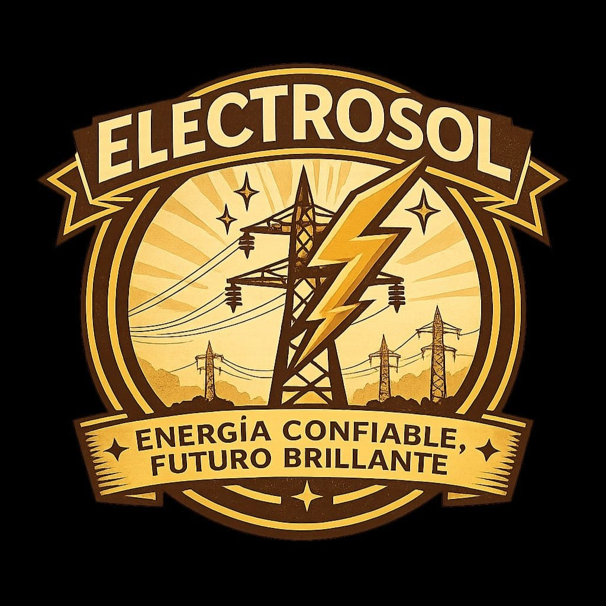
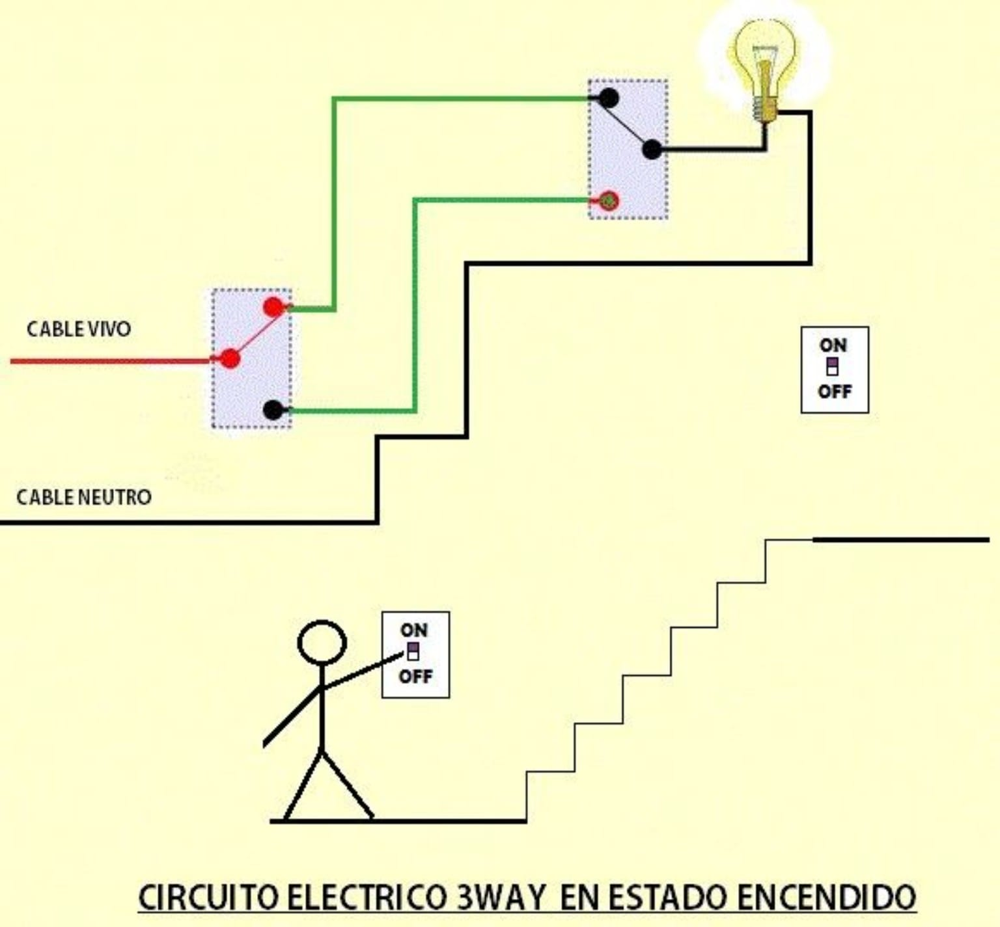
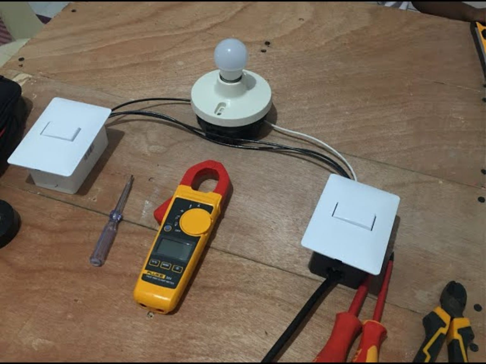

Bienvenido a Electrosol, una empresa guatemalteca dedicada a brindar servicios eléctricos, con miras a incursionar en el futuro en el área de energía solar. Por el momento, nuestro proyecto se centra en instalaciones eléctricas, como la conexión de circuitos three-way, siempre buscando la eficiencia y el uso responsable de la energía.
Brindar soluciones eléctricas y de energía solar confiables, eficientes y de alta calidad, ofreciendo servicios profesionales que satisfagan las necesidades de nuestros clientes, promoviendo el uso responsable de la energía y contribuyendo al desarrollo sostenible.
Ser una empresa líder y reconocida en el sector eléctrico y de energía solar, destacándonos por nuestra innovación, responsabilidad, calidad y compromiso con nuestros clientes, construyendo un futuro más eficiente y sostenible mediante el uso de energías confiables y renovables.
Actualmente, en Electrosol nos enfocamos en la conexión de circuitos three-way, los cuales permiten controlar un mismo punto de luz desde dos interruptores diferentes, algo muy útil en pasillos, escaleras o habitaciones con dos entradas.
A continuación se muestra el diagrama del circuito three-way en estado encendido, donde se observa la conexión del cable vivo, el cable neutro y los dos interruptores que controlan el bombillo desde diferentes puntos.

Esta es una fotografía real del montaje del circuito, realizado con dos interruptores, un bombillo y las herramientas adecuadas para las conexiones y mediciones eléctricas.

Dirección: 5ta Avenida 10-25, Zona 1, Ciudad de Guatemala
Teléfono: 2234-5678
Correo electrónico: contacto@electrosol.com
Lunes a viernes de 8:00 a.m. a 5:00 p.m.
Electrosol © 2026 - Empresa ficticia creada con fines educativos.